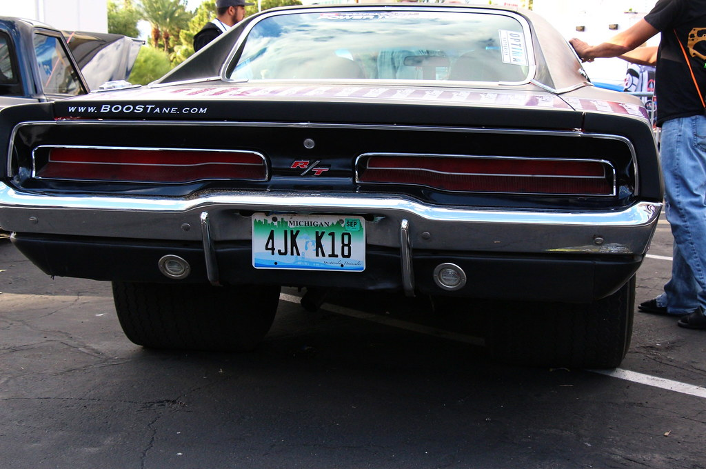

Vintage Cars From The 60s And 70s
1970 Dodge Charger R/T

- The 1970 Dodge Charger is an embodiment of automotive prowess,
having a robust 7.2-liter V8 engine that delivered an impressive 375 horsepower.
In just 5.7 seconds, it could accelerate from 0 mph to 60 mph, outpacing its contemporaries.
The Charger's unique rear spoiler, both a functional marvel and a design choice,
bestowed upon it improved aerodynamics and stability at high speeds.
The year 1970 brought a fresh design language,
featuring a split grille and an elegantly looped front bumper, setting it apart from its predecessors.
This Charger also had a special role in the Fast and Furious movies, becoming a true star on screen.
In the movies, this Charger was powered by a monstrous 528-cubic-inch Hemi V8 engine, producing an astonishing 900 horsepower.
This tremendous power allowed it to push itself from 0 to 60 mph in a blistering 4.5 seconds, showcasing its sheer force on the big screen.
This Charger wasn't just a car; it was a marvel of engineering that left a permanent mark on automotive history.
1969 Chevrolet Camaro
-
The 1969 Chevrolet Camaro stands as an emblem of American automotive ingenuity,
boasting a range of powerful engines that included the legendary 427 cubic-inch V8,
capable of producing up to 425 horsepower.
This prodigy of engineering could charge from 0 to 60 mph in just 6.5 seconds,
delivering a thrilling performance on the open road. Its sleek and muscular exterior,
with distinctive lines and a distinctive split front grille, captured the spirit of the era.
The Camaro's racing pedigree was further solidified by its victories on the track,
including notable wins at the 24 Hours of Daytona and the Trans-Am Series,
earning it a place in the hearts of speed enthusiasts worldwide.
With its timeless design and formidable performance,
the 1969 Chevrolet Camaro remains an icon of American muscle cars,
a testament to an era defined by horsepower and innovation.
Compared to the 1970 Dodge Charger, the Camaro exudes a more compact and agile profile,
making it a favorite among those seeking a nimble yet powerful ride.
While the Charger has immense power and an unmistakable presence, the Camaro focuses on speed and precision,
which sets it apart from other muscle cars as a true corner-carving masterpiece.
1967 Ford Mustang Shelby GT500
-
The 1967 Ford Mustang GT500 is an automotive legend, defined by its raw power and unmistakable presence.
Under the hood, it had a 7.0 liter (428 cubic-inch) Police Interceptor V8 engine,
generating a formidable 355 horsepower and an impressive 420 lb-ft of torque.
This engineering masterpiece allowed the GT500 to accelerate from 0 to 60 mph in just 6.5 seconds,
delivering a thrilling performance on both the streets and the track.
Its distinctive dual racing stripes and aggressive styling set it apart as an icon of American muscle cars.
In comparison, the standard 1967 Ford Mustang GT was equipped with a 6.4-liter (390 cubic-inch) V8 engine,
producing 320 horsepower and 427 lb-ft of torque.
This version of the Mustang could accelerate from 0 to 60 mph in approximately 7.5 seconds.
While it was not as powerful as the GT500,
the Mustang GT still offered impressive performance and played a significant role in the Mustang's legacy.
With their powerful engines and timeless designs, both the GT500 and GT versions of the 1967 Ford Mustang continue to be revered classics,
celebrated for their performance and enduring legacies in automotive history.
Wanna go back to the Main Page? Or maybe you want to see the Introduction into Vintage Cars one more time?